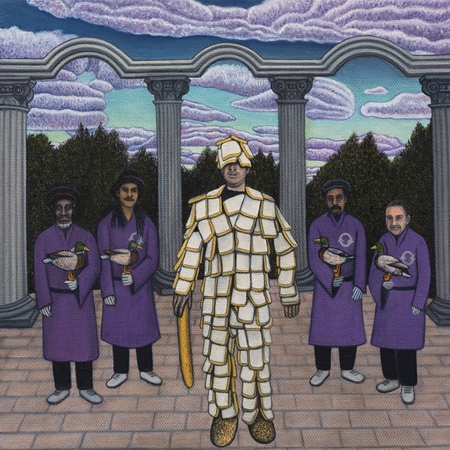

Jack A. Driscoll
Producer, Mix & Mastering Engineer

Perpetual Musket
Elijah Minnelli
2024 Fat Cat Records- Vocal Engineering
- Mastering
Features Little Roy, Shumba Youth, Earl 16, Joe Yorke.
This year’s performance features songs performed by Little Roy, Shumba Youth, Earl Sixteen and Joe Yorke with musical production, direction and conceptual oversight from Elijah Minnelli – ‘the ongoing artist-in-residence and de facto Night Czar of Breadminster’.
‘Perpetual Musket’ fuses dub reggae with traditional folk, reimagining classic standards with a cast of renowned reggae vocalists to breathe new life into traditional and folk songs. Each track is paired with a live dub version that shines a light on the instrumental adaptations of these traditional melodies.
Veteran Jamaican singer-songwriter Little Roy lends his finely honed tone to ‘Vine & Fig Tree’, an explicitly anti-war song originating from the Old Testament, infusing it with warmth and yearning.
Contemporary dancehall titan Shumba Youth enlivens the old traditional ballad ‘A’ Soulin’’, a song about a Souls’ Day winter ritual where the poor would knock on the doors of farm owners and the rich in a tradition that is believed to have influenced both carolling and trick or treating. Shumba's rhythmic dexterity refreshes the song with a unique energy.
Peggy Seeger's ‘Lifeboat Mona’ is the next rendition, telling the story of a lifeboat disaster in 1959, where an entire lifeboat crew perished while seeking to save an adrift boat on St. Andrews Bay. Roots reggae heavyweight Earl Sixteen imparts this folk ballad with great emotion and fine storytelling ability. The work of lifeboat crews is ever pertinent, as the vilification of ‘small boat’ seeks to dehumanise the most vulnerable in society. We've even seen attempts to vilify those who are simply doing their duty to save humans in need.
The final reinterpretation comes from Bristol's Joe Yorke, who sings ‘The Wind & The Rain’. His sleek, haunting falsetto matches perfectly with this tale of weather and weariness from Shakespeare's Twelfth Night. Joe has carved quite a path for himself in recent years, injecting a new voice into the world of contemporary reggae.
“Elijah Minnelli’s rendition of ‘Lifeboat Mona’ is truly excellent. It is a moving mixture of percussion, harmony and vocals that knows how to tell a story. Vocalist Earl Sixteen does it JUST RIGHT. All the elements of the song, as I wrote it back in December 1959, are still there. Thanks to all for doing it so well.” – Peggy Seeger
Peggy Seeger
“A brilliant collection of traditional folk covers through the lens of dub reggae… The splicing of genres feels seamless, joyful and briskly contemporary.”
The Guardian — No. 9 in The 10 Best Folk Albums of 2024
“On Perpetual Musket, Elijah Minnelli has ostensibly arranged four folk songs to be performed by reggae vocalists on the A-side, with dub tracks on the flip… Contemporary dancehall star Shumba Youth transforms ‘Soul Cake’… into a nimble earworm.”
The Quietus — No. 28 in Albums of the Year 2024
“A ridiculously good release that manages to decant centuries of English folk traditions into the Jamaican folk tradition; the countryman and the hurdy-gurdy man sharing tales of hope, death and redemption. In dub.”
Truth & Lies Music — 10/10
“The record is a veiled commentary on our war-torn globe, the plight of its refugees, austerity and corrupt, greedy ‘trickle down’ economies.”
Ban Ban Ton Ton
“Elijah Minnelli’s rendition of ‘Lifeboat Mona’ is truly excellent. It is a moving mixture of percussion, harmony and vocals that knows how to tell a story. Vocalist Earl Sixteen does it JUST RIGHT. All the elements of the song, as I wrote it back in December 1959, are still there. Thanks to all for doing it so well.”
Peggy Seeger, quoted by Truth & Lies Music